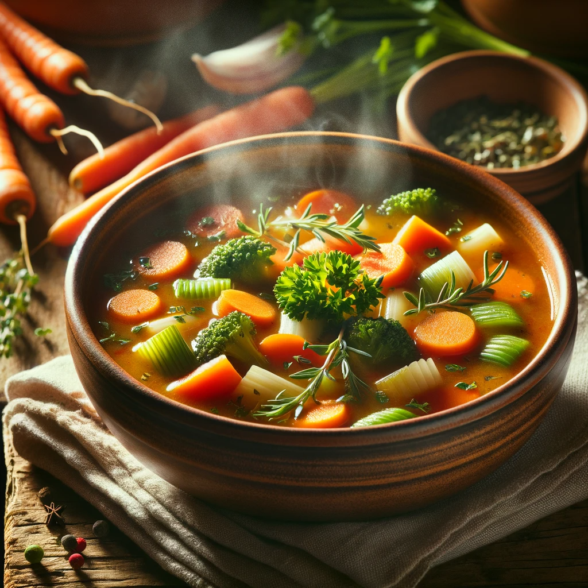

Hearthfire Harvest's Soup
A vegetarian soup with fresh produce, perfect for a quiet evening by the hearth.

Image generated by OpenAI's DALL·E
Recipe:
- Sauté onions, leeks, and garlic until soft.
- Add chopped tomatoes, celery, and sweet bell peppers.
- Pour in vegetable stock and bring to a boil.
- Add Skyrim herbs like lavender and sage.
- Simmer until vegetables are tender.
- Stir in a dollop of cream and a sprinkle of cheese before serving.
- Serve with herb-infused flatbread.